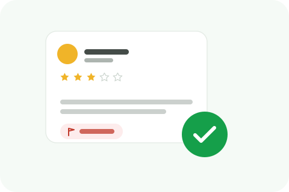

When you flag a review as not based on a genuine experience, Trustpilot gives the reviewer a chance to respond with proof. What happens when they just don't? Here's a closer look at that specific outcome.

When a business flags a review on "not based on a genuine experience" grounds, Trustpilot's process typically includes contacting the reviewer and asking them to substantiate the interaction, an order number, a receipt, some evidence they were actually a customer. This step exists to give genuine reviewers a fair chance to confirm their experience before a review comes down.
If the reviewer doesn't respond within the window given, that non-response generally strengthens the case for removal. The logic is straightforward: someone with a genuine purchase or interaction usually has something to point to, and a reason to defend a review they stand behind. Silence isn't automatic proof the review is fake, but combined with your own evidence that no matching customer record exists, it meaningfully supports the case.
Trustpilot still weighs the overall case, your original report, your evidence, and the reviewer's non-response together, rather than treating silence alone as a guarantee. A reviewer might not respond for all kinds of reasons unrelated to whether the review is genuine, they missed the notification, they've moved on and don't check back, or they simply didn't engage. The reviewer's silence is a factor in your favor, not an automatic win.
Your own documentation matters most either way, a records search showing no match for the name, email, or transaction the review references. Don't treat the reviewer's silence as a substitute for your own evidence, build the strongest case you can on your side of it, and let the reviewer's lack of response add to that rather than carry it alone.
Trustpilot doesn't publish a fixed, guaranteed timeline for this process, and it can vary by case. What's consistent is that it requires patience, the verification window has to run its course before the flag moves forward, and trying to rush or repeatedly re-flag the same review during that window generally doesn't speed things up.
Re-flagging the same review repeatedly, or submitting additional reports hoping to speed things along, generally doesn't help and can muddy a case that was otherwise straightforward. If you have genuinely new evidence that's come to light since the original flag, that's worth adding. Resubmitting the same information isn't new evidence, and it's unlikely to change how quickly the process moves.
If the case resolves in your favor, that's the process working as intended, a flag, a verification window, insufficient response, removal. If it doesn't, and the reviewer did eventually respond with something that holds up, that's also the process working as intended, it exists specifically to protect genuine reviews from being removed just because a business flagged them. Either outcome reflects the evidence on both sides, not a flaw in how the step itself functions.
A non-responsive reviewer works in your favor, but it's one piece of the case, not the whole thing. Pair the verification step with solid evidence from your own records, and let Trustpilot weigh the full picture rather than counting on silence alone to get a review removed.
We'll build the strongest case on your side of it, documentation included.